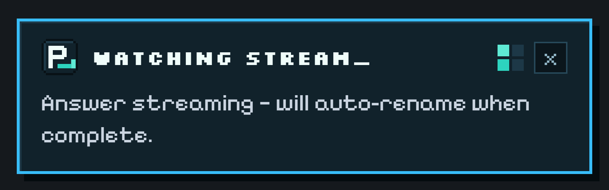

TROUBLESHOOTING PERPLEXITY AUTO-RENAME & COMMON FIXES
If a Perplexity thread didn't rename—or fell back to `[HEURISTIC]` instead of `[LLM]`—every cause can be diagnosed in under 30 seconds from the extension's Last Rename Activity panel.
If Auto-Rename for Perplexity is not renaming a thread, check four things first: (1) refresh any perplexity.ai tab that was already open before installation; (2) test on a brand-new thread (follow-ups and manually edited threads are intentionally skipped); (3) click the toolbar popup to verify HOST ACCESS OK for your chosen LLM provider; and (4) if using local Ollama, start it with OLLAMA_ORIGINS="chrome-extension://*" to prevent HTTP 403 CORS blocks.
Quick Symptom → Cause → Fix Matrix
Symptom
Most Likely Cause
30-Second Fix
No toast appears at all on perplexity.ai
Tab was open before extension install, or you asked a follow-up inside an existing thread.
Refresh perplexity.ai once (Cmd/Ctrl + R) and start a New Thread. Check that Bottom-Right Rename Toaster is enabled in the popup.
Toast says HEURISTIC instead of LLM
No API key saved for active provider, missing host permission, or invalid key/model name.
Open the popup, check for HOST ACCESS OK (click Grant Host Access if prompted), and click TEST LLM to view the exact status.
Ollama returns HTTP 403 Forbidden
Ollama blocks chrome-extension:// origins by default unless configured.
Restart Ollama with OLLAMA_ORIGINS="chrome-extension://*" ollama serve (or set the environment variable in your OS service).
Question skipped with SKIPPED BY RULE
Prompt matched one of your Regex Exclude Patterns (e.g. ^define\b or ^test\b).
Ask a real question that doesn't start with test/define, or edit Exclude Patterns in Full Settings.
Custom reasoning model returned empty output
A custom thinking model spent its token budget inside <think> blocks.
Built-in Groq (gpt-oss-20b) and Gemini 2.5 Flash already auto-configure low/zero thinking budgets; on OpenRouter or custom endpoints, pick a fast non-reasoning instruct model like gpt-4o-mini or llama-3.3-70b-instruct.
Checking Live Stream State on Perplexity.ai
When Bottom-Right Rename Toaster is enabled, you get immediate visual feedback on every new thread without opening DevTools:

Stage 1: As soon as a new Perplexity search starts streaming, WATCHING STREAM_ confirms active observation.
If you want deeper diagnostics for a custom OpenAI-compatible endpoint, enable Log provider fallback error details in browser console in Full Settings—all API keys are automatically redacted from error strings before logging.
Frequently Asked Questions
WHY DIDN'T AUTO-RENAME RUN WHEN I ASKED A SECOND QUESTION IN THE SAME THREAD?
By design! Renaming on follow-ups would constantly shift your thread's title while you research. Auto-Rename checks last_backend_uuid and is_related_query so only the first answer of a brand-new thread triggers a title.
WHAT DOES 'HTTP 204 VIA GROQ' MEAN IN THE POPUP?
HTTP 204 (No Content) is Perplexity's success status code confirming that set_thread_title saved your new title on Perplexity's backend. If a transient network hiccup occurs, Auto-Rename automatically retries up to two times.
HOW DO I FIX OLLAMA 403 ERRORS WITH CHROME EXTENSIONS ON WINDOWS OR MACOS?
Set the environment variable OLLAMA_ORIGINS to chrome-extension://* before launching Ollama (on macOS: launchctl setenv OLLAMA_ORIGINS "chrome-extension://*", then restart the Ollama app).
Tired of Perplexity.ai using your raw prompt, stack trace, or truncated paragraph as the thread title? Fix Perplexity Library titles automatically in 60 seconds with Auto-Rename for Perplexity.
Turn a cluttered Perplexity.ai Library into a searchable knowledge base using automatic 3–7 word titles, custom project prefixes like [Research] or [Bug], and regex exclude rules.
Step-by-step unpacked installation guide for Auto-Rename for Perplexity across Google Chrome, Brave, Arc, Microsoft Edge, and Vivaldi—no Chrome Web Store account or Node.js required.
Compare all 10 supported LLM providers plus zero-key offline mode in Auto-Rename for Perplexity—including free Groq (gpt-oss-20b), Gemini 2.5 Flash, OpenRouter :free, and 100% local Ollama.
ChatGPT and Claude automatically summarize new chats into short 3–6 word titles, while Perplexity.ai keeps your raw prompt. Learn why—and how to add automatic AI thread titles to Perplexity.
How to upgrade your daily Perplexity.ai research workflow in Chrome, Brave, Arc, and Edge with open-source Manifest V3 tooling, clean 3–7 word Library titles, and strict API key privacy.